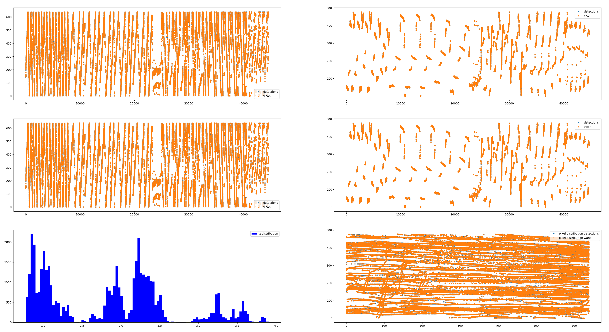
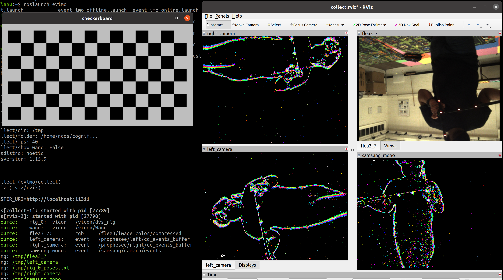
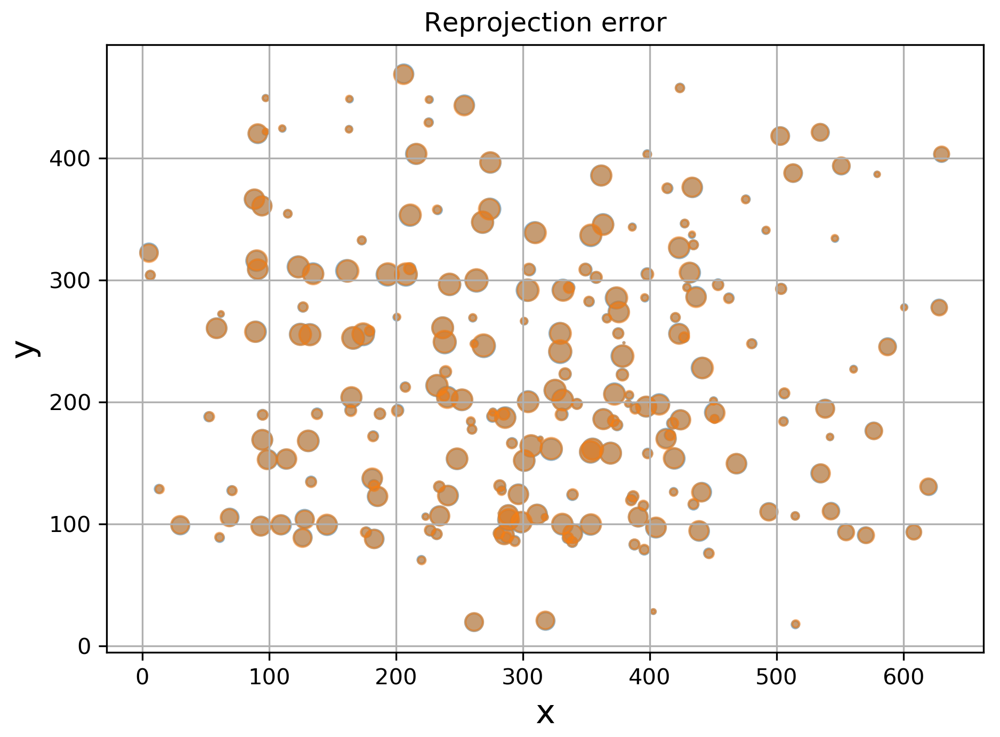

Calibration Tools
The calibration tools are designed to calibrate (intrinsically and extrinsically) a single camera and Vicon. We use two tools to perform calibration: the collect tool, which allows to collect a small amount of frames for a complete (but not always the most accurate) calibration, and refine tool for calibration refinement, given the initial calibration is provided. We run the refine tool before every data collection, while the collect tool has only been used once.
refine tool
The code for the tool is located here. A typical use-case:
rosrun evimo refine _conf:=./evimo2/calib_112420/samsung_mono.cfg
Input to the tool:
An input to the tool a folder with one or several .bag files, which contain the Vicon calibration wand recording: both camera images (or events) and Vicon pose topics for wand and for the sensor rig. The folder (with multiple sensor configuration files) may look like:
calib_112420/
├── bagname.txt
├── flea3_7.cfg
├── left_camera.cfg
├── right_camera.cfg
├── samsung_mono.cfg
├── wand_00_depth_00.bag
├── wand_00_depth_01.bag
├── wand_00_depth_02.bag
├── wand_01_depth_00.bag
├── wand_01_depth_01.bag
└── wand_01_depth_02.bag
Configuration file
The configuration file (for example samsung_mono.cfg) will contain some sensor-specific settings and configuration for the refinement run:
camera_name: samsung_mono
image_th: 240 # only useful for classical cameras
dilate_blobs: false # only useful for event cameras
bag_file: wand_01_depth_00.bag 3 20
bag_file: wand_01_depth_01.bag 2 20
bag_file: wand_01_depth_02.bag 0 -1
Settings |
Description |
|---|---|
|
Camera in sequence folder to get initial calibration and ROS topic from |
|
List of |
|
Optional parameter which is only used for classical cameras (code) |
|
Optional parameter which is only used for event cameras (code) |
Parameters
The tool accepts several parameters (we recommend sticking with the defaults).
Note: for event cameras the tool performs frequency filtering (code). We recorded the calibration for evimo with Vicon wand leds flickering at 200Hz. You may wish to disable this feature in case your recording does not use flickering leds.
Parameter |
Description |
|---|---|
|
Path to the camera configuration file (e.g. |
|
The path to the sequence folder |
|
A ROS topic of Vicon calibration wand |
|
Width of event slice (in seconds) used to detect the Wand |
|
Frequency at which to generate ‘frames’ for event cameras |
|
Maximum ‘pixel-per-second’ speed of tracked blob between frames |
|
Smallest length of the path of a tracked blob to be used |
Refinement pipeline:
The tool extracts the tracks (wand led markers) separately from each .bag file, but then uses them all together in the optimization. Note: vicon tracks IR markers on the wand, while the detected markers are in visible light, and are offset from IR markers. We used a 3D scan of the wand (link) to extract the offset. The mapping can be found here.
The data is preprocessed: events are frequency-filtered, and event slices are downprojected to form images. OpenCV’s blob extractor is then used to extract blobs for every individual frame (code).
The Vicon tracks are converted to rig frame (also tracked by Vicon), and visible (red) led locations are computed from IR led poses (code).
The blobs are tracked (nearest neighbor match with thresholding) and short tracks are removed (code, code).
The wand is detected here, and the marker labels are propagated along tracks.
Cross-correlation between Vicon reprojected markers (using initial calibration estimate) and detected markers is used to align time per each bag file (code).
The calibration is ran twice after the initial calibration the outlier points are removed (the points with error below mean), and the calibration is repeated.
Refinement result:
The tool will not save the result of the calibration, but will output it to the terminal. It can be directly copied to the camera folder within the dataset configuration folder.
In addition, the tool will plot the statistics on the data:

Top row: input (estimate after initial calibration / before outlier removal).
Left: all x points.
Right: all y points. Middle row: same as top, but after the final refinement step (if you would like to generate a similar plot before the calibration, change false to true here).
Bottom left: distribution of depth across all recordings.
Bottom right: distribution of x-y points projected on the camera plane.
collect tool
The code for the tool is located here. A typical use-case:
roslaunch evimo collect.launch config:=~/config.txt output_dir:=/tmp/collect
A visualization like below will be shown: 
Reprojection error tool
TODO
evimo/evimo/calib$ ./wand_calib.py /home/ncos/ooo/EVIMO2/recording_day_0/calib/samsung_00/ /home/ncos/ooo/EVIMO2/recording_day_0/calib/samsung_01/ /home/ncos/ooo/EVIMO2/recording_day_0/calib/samsung_02/ /home/ncos/ooo/EVIMO2/recording_day_0/calib/samsung_03/ /home/ncos/ooo/EVIMO2/recording_day_0/calib/samsung_04/ -c cam_3
